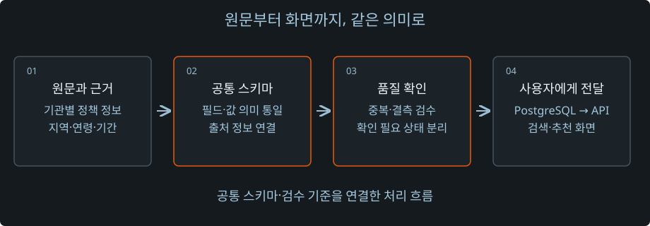

발견
값은 있지만, 조건의 근거가 없음
연령 placeholder가 신청 가능한 나이처럼 구조화되어 판정에 영향을 줌
01 / 청년정책알리미
기관별 정책 데이터를 공통 기준으로 정리하고, 추천 결과의 정확성을 확인하면서 반복 조회를 개선했습니다. 데이터 수집부터 다른 PC에서의 실행까지 연결했습니다.
2026.06.17 ~ 2026.08.27 · 오픈소스 팀 프로젝트
MEASURED RESPONSE TIME
응답 시간 90.7% 단축
01 / Background
청년정책은 기관마다 필드와 조건 표현이 달랐습니다. 정책을 한곳에 모아도 지역·연령·신청 상태의 의미가 다르면 검색과 추천 결과를 같은 기준으로 설명하기 어려웠습니다.
저는 팀장·데이터파트로서 공통 스키마와 API·데이터 계약을 정하고, 담당자별 결과물을 DB–API–화면으로 연결해 확인했습니다. 팀원 간 역할을 나누고 Git PR 검토와 통합·실행 검증을 함께 진행했습니다.

02 / Data Contract
원문에 근거가 없는 값을 실제 자격조건처럼 해석하면 추천 결과도 달라집니다. 일부 데이터에서는 연령 근거가 없는 0세~0세 값이 실제 제한으로 처리되는 문제를 확인했습니다.
발견
연령 placeholder가 신청 가능한 나이처럼 구조화되어 판정에 영향을 줌
정리
식별된 631건의 근거 없는 숫자 경계를 해제하고 정규화·재적재
기관별 필드를 공통 스키마로 맞추고 자격조건·중복·결측을 검수했습니다. 값이 없거나 확인되지 않은 상태를 추측으로 채우지 않고, 원문 근거와 함께 구분해 전달했습니다.
이 기준을 데이터 모델, API 응답과 화면의 안내 문구까지 연결했습니다. 산출물을 합친 뒤에는 필드명이 같은지와 함께 빈 값·확인 필요 상태가 같은 의미로 해석되는지도 점검했습니다.
03 / Query Improvement
추천 결과에서 다른 지역이나 마감 정책이 남고, 뒤쪽에 적재된 지역 정책이 평가 대상에서 빠지는 문제를 확인했습니다. 검색과 추천의 조건 판정을 맞추고 전체 승인 정책을 평가하도록 변경하자, 응답에 약 14.845초가 걸렸습니다.
원인을 따라가 보니 정책마다 지역 근거와 행정구역 정보를 다시 읽는 N+1 조회가 있었습니다. 평가 대상과 최종 응답 개수를 구분하고, 대상 정책의 지역 근거·행정구역 정보를 일괄 조회한 뒤 메모리에서 판정하도록 바꿨습니다.
수정 전
수정 후
MEASURED RESPONSE TIME
응답 시간 90.7% 단축
측정 당시 개발 DB 3,273건에서 같은 PC·요청 조건으로 수정 전후를 비교했습니다. 대구광역시·25세 조건의 결과 34건이 모두 지역 조건과 일치하고, 마감 정책이 포함되지 않는 것도 함께 확인했습니다.
04 / Delivery & Validation
개발 환경에서만 실행되는 결과로 끝나지 않도록 공개 데이터셋과 설치·검증 절차를 구성했습니다. 공개 정책 2,051건을 별도 API Key 없이 초기 설치하고, Docker 기반 Windows 환경에서 서비스를 시작하도록 연결했습니다.
다른 PC에서 설치·실행을 확인하고 결과물과 시연 영상을 제출했습니다. PR 검토와 함께 실제 DB–API–화면에서 데이터의 의미와 동작이 이어지는지를 통합 검증했습니다.
05 / Takeaway